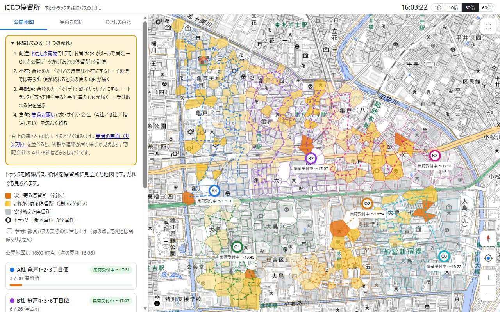
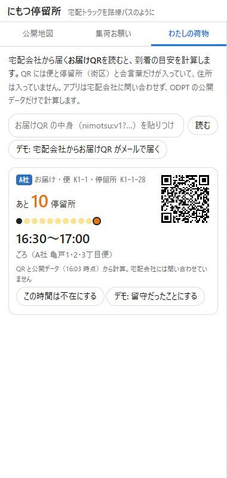
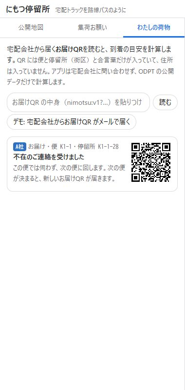
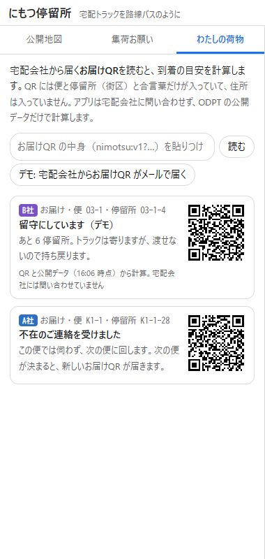
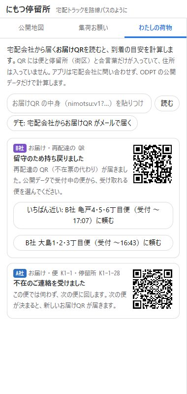
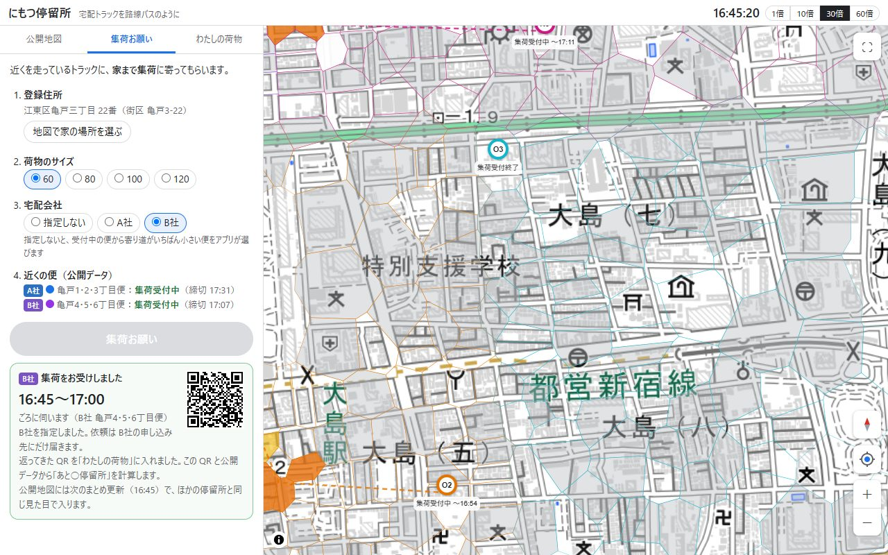
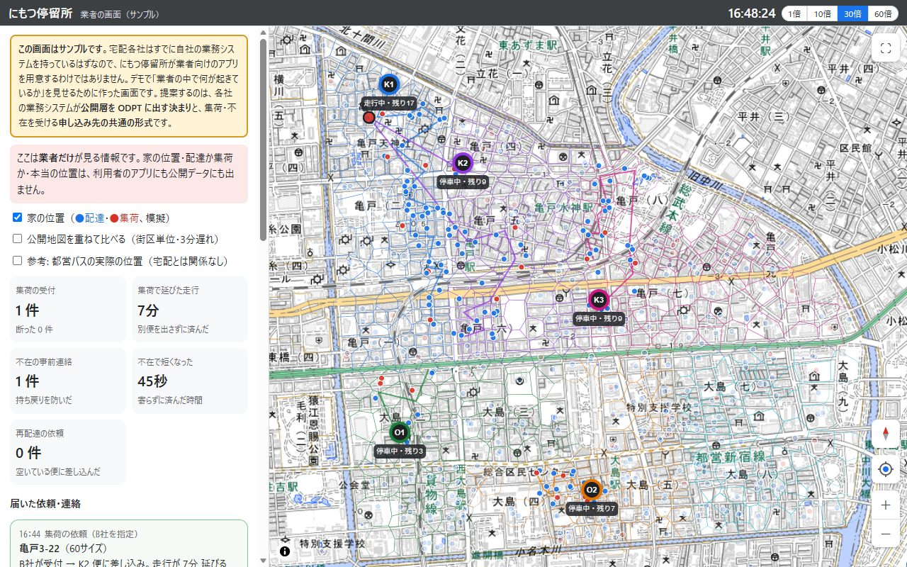

にもつ停留所とは
宅配トラックを路線バスに、街区（○丁目○番のひとかたまり）を停留所に見立てて、「荷物があと何停留所で来るか」を見られるようにするアプリです。配達は「降りる」、集荷は「乗る」にあたります。
時間を指定しても荷物がいつ来るのか分からず出かけられない、不在で持ち戻りになり再配達になる——こうした困りごとは、利用者からはトラックがいつ来るのかが、業者からは家に人がいるのかが、おたがいに見えないことから起きています。にもつ停留所は、住所を出さずに「いつ来るか」を見せ、不在の連絡・再配達・集荷の依頼をつなぎます。
はじめに（3 つの画面）
おすすめの見方: パソコンで 2 つの窓を並べると、利用者のアプリで頼んだことが、業者の画面（サンプル）にすぐ届くのが見えます。2 つの画面は同じブラウザの中で同じデモを共有しています。
4 つの体験は、どれも数分で終わります。右上の速さを 60倍 にすると早く進みます。
画面の見方

| 場所 | 中身 |
|---|---|
| 上の帯・右 | デモの時刻と速さ（1倍 10倍 30倍 60倍）。はじめは 30倍 で、現実の 1 分がデモの 30 分です |
| 左・タブ | 公開地図 だれでも見られる地図 ／ 集荷お願い 家まで集荷に来てもらう ／ わたしの荷物 自分の荷物がいつ来るか |
| 地図・右上 | 全画面 |
| 地図・右下 | 上から 方角（押すと北が上に戻り、傾きも真上からに）・現在地・拡大（＋）・縮小（−） |
| 地図・左下 | ⓘ を押すと出典が出ます |
現在地ボタン: デモのエリア（亀戸・大島）の外にいるときや位置が取れないときは、追跡中の荷物の停留所、なければ登録住所を画面の中ほどに出します。
公開地図
トラックが巡回順に街区（停留所）を回っていく様子を見せる地図です。宅配会社が公共交通オープンデータセンター（ODPT）に出す「公開層」だけで描いています。だれが見ても同じで、家の位置は出ません。
| 色・印 | 意味 |
|---|---|
| 濃い橙 | 次に寄る停留所（街区） |
| 黄色 | これから寄る停留所。濃いほど近い |
| 灰色 | 寄り終えた停留所 |
| ○ と記号（K1 など） | トラック。位置は街区単位に粗くし、3 分遅らせています。「集荷受付中 〜17:31」は集荷の締切 |
| 点線 | 巡回の順路 |
- 左のトラックの一覧: 会社・便の名前、集荷の受付の状態、何停留所まで回ったか。押すと地図がそのトラックへ動きます
- 街区を押すと、その停留所の情報と ここを登録住所にする が出ます
- 参考: 都営バスの実際の位置も出す にチェックを入れると、都営バスの今の位置（ODPT のリアルタイムデータ）を緑の点で出します。宅配とは関係ありません。バスの位置情報がこう見える、という参考です
- 「公開データ（GTFS-Flex / GTFS-RT）」を開くと、公開層の中身（stop_times.txt・locations.geojson など）を見られます
体験 1 配達: お届けQR から「あと○停留所」
- わたしの荷物 を開く
- デモ: 宅配会社からお届けQR がメールで届く を押す。荷物のカードが出ます
- カードに あと○停留所、点の並び（●がトラック、◎が自分の停留所）、到着の時間幅、便の名前が出ます。地図では自分の停留所が太い線で囲まれます
- 時間がたつと「あと○停留所」が減り、「まもなく（次がこの停留所です）」→「お届けしました」と変わります
お届けQR には、会社・便・停留所（街区）・期限・合言葉だけが入っていて、住所は入っていません。アプリは宅配会社に問い合わせず、QR と公開地図のデータだけで手元で計算します。
QR の中身（nimotsu:v1?f=A&t=…）を上の欄に貼って 読む を押しても同じです。

体験 2 不在: 先に伝えて、次の便へ
- 荷物のカードで この時間は不在にする を押す（トラックがまだ 3 停留所以上先のときに出ます）
- カードが「不在のご連絡を受けました」に変わります。トラックはこの便ではその停留所に寄りません（荷物がほかにない街区は飛ばします）
- 便が終わると、宅配会社から次の便のお届けQR がお知らせで届き、カードが新しい QR に入れ替わります
不在の連絡は「書く」操作なので、公開データではなく、その宅配会社の申し込み先へ直接届きます。業者の画面（サンプル）の「届いた依頼・連絡」に出ます。

体験 3 再配達: 持ち戻り → 便を選んで依頼
ここでは「連絡せずに留守にしていた」場合を体験します。
- 荷物のカードで デモ: 留守だったことにする を押す。カードが「留守にしています（デモ）」に変わります
- トラックは停留所に寄りますが、渡せないので持ち戻ります（速さを 60倍 にすると早く進みます）
- 不在票の代わりに再配達の QR が届き、カードが「留守のため持ち戻りました」に変わります
- 同じ会社のいま集荷を受け付けている便が、前に寄った街区に近い順にボタンで並びます（いちばん上が「いちばん近い」）。受け取れる便を押します
- 受けてもらえると「再配達をお受けしました（○時ごろ）」と出て、新しいお届けQR に入れ替わります。差し込まれたばかりの停留所は、次のまとめ更新（3 分ごと）までは「受け付けました」と出て、そのあと「あと○停留所」に変わります
断られたときは理由が出ます（寄り道が長くなりすぎる・荷台に余裕がない・便の終わりに間に合わない など）。ほかの便を選んでください。受付中の便がないときは、次の便が出ると選べるようになります。


体験 4 集荷: 会社を選んで、走っている便に

- 集荷お願い を開く
- 登録住所: 地図で家の場所を選ぶ を押してから地図で家の場所を押す（公開地図で街区を押して ここを登録住所にする でも決められます）。住所はこのブラウザの中にだけ置きます
- 荷物のサイズ: 60・80・100・120
- 宅配会社: 指定しない ／ A社 ／ B社。指定しないと、受付中の便から寄り道がいちばん小さい便をアプリが選びます。指定すると、依頼はその会社の申し込み先にだけ届きます
- 近くの便: 会社ごとに、家にいちばん近い便が集荷を受け付けているかが出ます（公開データ）
- 集荷お願い を押すと、宅配会社が寄り道・荷台・便の終わりの時刻を見て判断し、受けられれば伺う時間幅と QR が返ってきます。QR は わたしの荷物 に入り、「あと○停留所」が見られます
集荷の停留所は、公開地図には次のまとめ更新で、ほかの停留所と同じ見た目で入ります。配達か集荷かは区別されないので、地図からはだれが集荷を頼んだか分かりません。
業者の画面（サンプル）

- 家の位置（青＝配達、赤＝集荷。模擬）と、トラックの本当の位置。業者だけが見る情報で、利用者のアプリにも公開データにも出ません
- 公開地図を重ねて比べる: 公開層ではどこまで粗くなっているかを見比べられます
- 集計: 集荷の受付・断った数、集荷で延びた走行、不在の事前連絡、不在で短くなった時間、再配達の依頼
- 届いた依頼・連絡: 利用者のアプリからの集荷（会社の指定の有無）・不在・留守・再配達
- 便の一覧（会社・便、残りの停留所、集荷の受付）
- デモを最初からやりなおす: デモの状態を最初に戻します。利用者のアプリの荷物もなくなります
地図の操作
Google マップと同じ操作です。
| マウス | 左ドラッグで移動、右ドラッグで回転、ホイールで拡大・縮小 |
|---|---|
| 指 1 本 | 移動 |
| 指 2 本 | 広げる・狭めると拡大・縮小、ひねると回転、そのまま動かすと移動、2 本そろえて上下に動かすと傾き |
| ボタン | 右下の 方角・現在地・＋・−、右上の全画面 |
プライバシーの決まり
データを 3 つの層に分け、だれが何を見られるかを決めています。
| 層 | だれが見る | 中身 |
|---|---|---|
| 業者層 | その宅配会社だけ | 住所、配達か集荷か、巡回順、本当の位置 |
| 公開層 | だれでも（ODPT） | 街区単位の停留所、巡回順、時間幅、おおまかな位置（3 分遅れ）、集荷の受付と締切 |
| 本人層 | 本人だけ（アプリの手元で計算） | 自分の荷物の「あと○停留所」と時間幅 |
- 停留所は家ではなく街区。荷物が 1 件だけの街区は、隣の街区とまとめます
- 1 つの停留所の世帯は 100 以上にします。郊外のように街区の世帯が少ない所では、近くの停留所や隣の街区とまとめて、荷物の届く先が絞れすぎないようにします
- 配達か集荷かを区別しません（GTFS の乗降区分は全部「要予約」）
- 公開地図は 3 分ごとにまとめて更新します。頼んだ直後には変わりません
- トラックの位置は街区単位に粗くし、3 分遅らせます。停まっている間は表示を止めます
- お届けQR に住所は入れません。自分の荷物と登録住所は、このブラウザの中（localStorage）にだけ置きます
ことば
| 停留所 | 街区（○丁目○番）、または隣り合う街区のまとまり。家ではありません |
|---|---|
| 便 | トラックが営業所を出て戻るまでの 1 回の巡回。路線バスの 1 本にあたります |
| お届けQR | 宅配会社から届く QR。会社・便・停留所・期限・合言葉が入っています（住所は入れません） |
| 再配達の QR | 持ち戻りになったときに不在票の代わりに届く QR。便と停留所はまだ決まっていません |
| 公開層 | 宅配会社が ODPT に出すデータ。形式は GTFS-Flex（時刻表）と GTFS-RT（リアルタイム） |
| まとめ更新 | 公開層を 3 分ごとにまとめて出しなおすこと |
| 申し込み先 | 集荷・不在・再配達の依頼を受ける各社の窓口。宛先は公開層（booking_rules）に書きます |
よくある質問
- 本物の荷物を追跡できますか？
- できません。これはデモで、配達のデータは模擬、宅配会社の A社・B社は架空です。実際の宅配会社の荷物には使えません。
- 住所が知られることはありませんか？
- 公開地図に出るのは街区単位の停留所だけで、配達か集荷かも区別しません。お届けQR にも住所は入りません。登録住所はこのブラウザの中にだけ置き、どこにも送りません（デモでは集荷の依頼のときに街区を業者の画面に渡します）。
- アプリは宅配会社に問い合わせていますか？
- 「いつ来るか」を見るときは問い合わせません。お届けQR と公開データだけで手元で計算します。宅配会社へ送るのは、集荷・不在・再配達の依頼だけです。
- 時間がずれることはありますか？
- あります。時間幅は目安です。遠い先ほど幅を広く取ります。
- デモを最初からやりなおしたい
- 業者の画面（サンプル）の デモを最初からやりなおす を押してください。
- スマートフォンでも使えますか？
- 使えます。画面が狭いときは、地図と操作盤が上下に並びます。2 つの画面を並べる体験はパソコンがおすすめです。
- 集荷や再配達を断られた
- トラックの寄り道が長すぎる、荷台に余裕がない、便の終わりに間に合わない、受付を締め切った、のどれかです。ほかの便や会社を選ぶか、次の便が出るのを待ってください。
データの出典・お問い合わせ
使用したオープンデータ
- 東京都交通局・公共交通オープンデータ協議会、東京都交通局 バス関連リアルタイム情報、クリエイティブ・コモンズ・ライセンス 表示4.0国際（https://creativecommons.org/licenses/by/4.0/deed.ja）
公共交通オープンデータセンターから取得。公開地図の「参考: 都営バスの実際の位置」に使用 - 出典：位置参照情報ダウンロードサービス（国土交通省）（https://nlftp.mlit.go.jp/isj/）
「位置参照情報ダウンロードサービス」（国土交通省）の街区レベル位置参照情報（令和5年、東京都江東区。上津台で試すときは兵庫県神戸市北区）をもとに、にもつ停留所が街区の区画を作成 - 出典：政府統計の総合窓口(e-Stat)（https://www.e-stat.go.jp/）
「令和2年国勢調査 小地域集計」（総務省統計局）を加工して作成（町丁目別の世帯数から、配達件数の模擬データを作成） - 出典：国土地理院（地理院タイル 淡色地図）（https://maps.gsi.go.jp/development/ichiran.html）
表示される公共交通データは、公共交通事業者から提供されたデータをもとにしていますが、正確・完全とは限りません。配達のデータと宅配会社（A社・B社）は模擬・架空です。このアプリについて、公共交通事業者や宅配会社には問い合わせないでください。
お問い合わせ
GitHub の Issues へお寄せください。ソースコード: github.com/tyra0119/pj_ParcelTransit ／ 紹介動画: YouTube（2 分 57 秒）